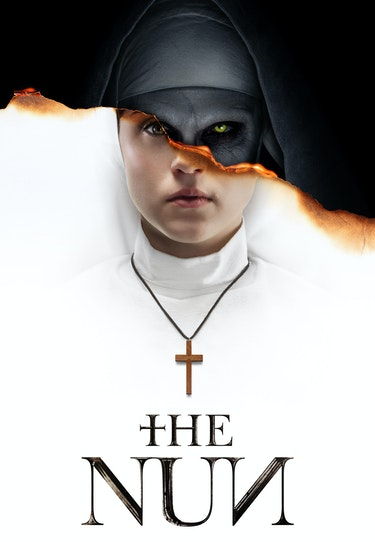

Handlar om ett kloster med en massa nunnor. De lever i ständig skräck över en svart nunna som finns i källaren.
Denna nunna är egentligen djävulen som antagit formen som en nunna. som behöver en kropp att finnas i för att kunna lämna klostret.
Filmen The nun är en film i Anna-Bell som då blir "värd" åt den här djävulen och sen dödar många.
